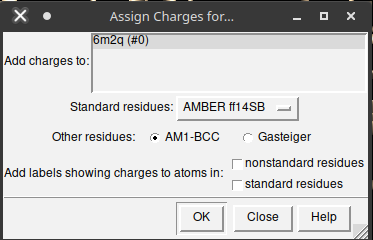

Atracamento Molecular (Molecular Docking)
Observações:
- Este tutorial foi construído pela Dra. Jéssika Viana (na época como discente de doutorado em Estágio em Docência) e revisado pelo Prof. João Paulo MS Lima (PPg-Bioinfo/BioME). Este tutorial foi construído apenas para fins didáticos. A reprodução dele para qualquer outro fim não é permitida e nem consentida.
Docking com o AutoDock Vina
Introdução
Neste tutorial iremos aprender a realizar a análise de atracamento molecular (molecular docking). Iremos utilizar o Autodock Vina [1], um programa de código aberto que realiza o docking molecular. Ele foi projetado e implementado pelo Dr. Oleg Trott no Laboratório de Gráficos Moleculares do The Scripps Research Institute. Este programa pode ser utilizado dentro do UCSF Chimera [2] ou por linha de comando em shell, sendo disponível nos sistemas operacionais (S.O.) Windows, Linux e Mac.
Para sua instalação, siga o padrão solicitado pelo programa, disponível no site do desenvolvedor. A instalação será regida pelo S.O. utilizado em seu computador.
Iremos dividir este tutorial em 4 partes: preparação do receptor, preparação do ligante, preparação e execução do atracamento, e analisando os resultados. Os 4 passos a seguir serão realizados utilizando o programa UCSF Chimera. Vamos lá?
1. Preparação do receptor
No programa UCSF Chimera clique em Fetch.

Na nova aba selecione pdb e escreva o código 6M2Q e clique novamente em Fetch. Em seguida a estrutura será aberta e visualizada.

Agora que a proteína foi localizada com sua estrutura tridimensional, seguiremos para a preparação da proteína para o docking. Esta etapa consiste em remover solventes (como moléculas de água), adicionar hidrogênios à estrutura, minimizar a estrutura e adicionar cargas. Inicialmente vá ao menu presente na barra superior do Chimera até a seleção Tools e siga os passos:
- Vá em Tools > Surface/Binding Analysis > Dock Prep.

- Na janela aberta escolha as opções abaixo (veja a figura abaixo):
- Delete solvent;
- If alternate locations, keep only highest occupancy;
- No submenu Change, marque todas as seleções;
- Incomplete side chains;
- Add Hydrogens;
- Add Charges;
- Write Mol2 file.

- Após isto, pressione
Ok.
Em seguida uma janela será aberta sobre a adição de hidrogênios na proteína. Nas alternativas, deixe as opções padrão (also consider H—bonds; histidine e Residue-name-based). Após marcação, pressione Ok.

Após isto, uma terceira aba será aberta, denominada Assign charges for Dock Prep. Deixe a opção de cargas AMBER ff14SB e AM1-BCC (um campo de força baseado em mecânica quântica, semi-empírico).

Em estruturas que possuem outros ligantes (que não seja o que estás utilizando) após pressionar
Okuma nova janela será aberta para especificarmos as cargas líquidas destas moléculas químicas, sendo denominada de Specify Net Charges. Nesta nova janela escolha o método AM1-BCC e pressioneOk. Esta opção não irá aparecer com o pdb 6MQ2.
Uma nova caixa de diálogo será aberta para que o arquivo da proteína preparada seja salvo em formato .mol2. Salve o arquivo com o nome recep.mol2.
2. Preparando o ligante
Iremos trabalhar com um inibidor relatado em literatura para esta enzima: o inibidor Baicalein. Ele é um composto natural pertencente a classe das flavonas, um tipo específico de flavonoide. Estudos de Su e colaboradores (2020) [3] identificaram a inibição de forma dose-dependente a proteína 3CLpro de SARS-CoV-2, bem como a replicação do SARS-CoV-2 em células Vero E6.
O ligante está disponível no PDB sob o código 3WL. O arquivo do ligante pode ser construído e salvo por meio do software UCSF Chimera usando o código SMILES (Simplified-Molecular Input-Entry System) que está disponível no site PDB.
Após copiar o código SMILES, siga as instruções abaixo no Chimera:
- Vá em Tools > Structure Editing > Build Structure.
- Na nova caixa de diálogo selecione a opção “Smile string” e na caixa de texto cole o código. Depois, dê um nome ao seu ligante (em residue name) de 3WL e clique em
Apply.
Os passos para construir uma molécula no UCSF Chimera a partir do seu SMILES podem ser vistos nos tutoriais anteriores.
Após realizado, o ligante aparecerá na área de trabalho do Chimera. Selecionaremos apenas o ligante para realizar a minimização de energia sob o método AM1. Para isso, siga os seguintes passos:
-
Select > residue > 3WL;
-
Tools > Structure editing > Minimize structure;
-
Na nova janela, clique em
Minimize;

- Teremos novamente a janela de Dock Prep. Pode seguir da mesma forma como na preparação da proteína acima.
- Na próxima janela escolha AM1-BCC e clique em
Ok. - Na janela Assign Charges (que agora aparece), você deixa o ligante como não carregado.
A minimização irá iniciar para os compostos estudados.
3. Preparação e execução do atracamento
Após preparar o ligante e o receptor, vamos realizar o docking das duas moléculas pelo programa AutoDock Vina. No Chimera siga os passos abaixo:
- Tools > Surface/Binding Analysis > AutoDock Vina.
Uma nova janela será aberta e nela haverá várias opções para preenchermos.
Na opção Output file iremos indicar o diretório e o nome dos arquivos que serão gerados. Clique em Browse e escolha a pasta e o nome do arquivo a ser salvo (insira dock). Não se esqueça de marcar a opção: Add .pdbqt suffix if none given. Após isto, pressione Set Output Location.
- Na opção Receptor escolha a proteína
6M2Q. - Na opção Ligand escolha o ligante
c1ccc(cc1)C2=CC(=O)c3c(cc(c(c3O)O)O)O2.
As seguintes opções referem-se as coordenadas do sítio ativo e o tamanho da caixa que delimitará a busca por interações.
Neste tutorial iremos dar as coordenadas, no entanto, para outras proteínas você deverá procurar na literatura e nas estruturas resolvidas a região a qual pretendes realizar o dock. O UCSF Chimera também permite a utilização do mouse para escolha manual da região.
- Insira as coordenadas abaixo e perceba que aparecerá uma caixa na coloração verde em sua tela:
- Na opção Center insira: 116.777 -15.5687 67.3585.
- Na opção Size insira: 18.2199 18.7237 17.4398.
Para este tutorial, você pode deixar as demais opções de Receptor options e Ligand options, nas opções padrão. Em Advanced options escolha:
- Number of binding modes = 9;
- exhaustiveness of search = 8;
- maximum energy difference (Kcal/mol) = 3.
Na opção “Executable location” escolha Local para que o docking seja processado na sua máquina local. O PATH de instalação seguirá o caminho do diretório até o arquivo vina.exe .Vá em Browse e procure esse caminho até encontrar o arquivo vina.exe e selecione-o.
Observação: o site autodock vina destaca que, se seguido o tutorial de instruções do programa corretamente, o arquivo vina.exe estará no seguinte caminho: C:\Program Files (x86)\The Scripps Research Institute\Vina\vina.exe
Ao final clique em OK e o docking iniciará. Acompanhe o processamento pela barra de comandos no canto inferior do Chimera.
4. Avaliando os resultados
Após terminar o processo o Chimera será aberto uma caixa de diálogo chamada de View Dock. Nesta janela aparecerá os valores de pontuação de acordo com as conformações de maior interação (valores menores - mais negativos) aos de menor interação (valores maiores - menos negativos ou positivos). Também identifique a forma que o ligante se posicionou no sítio ativo.
Também podemos verificar as ligações de hidrogênio existentes entre o ligante 3WL e a proteína. Na mesma janela de diálogo vá em:
- HBonds > Add counter to entire receptor.
- Na nova janela aberta selecione as opções:
- Inter-model.
- Relax H-bond constraints.
- Color H bonds not meeting precise criteria differently
- If endpoint atom hidden, show endpoint residue.
Ao final, pressione OK e observe as ligações de hidrogênio existentes entre o ligante e a proteína do nosso estudo.
Docking com o SwissDock
Introdução
Além deste programa, o SwissDock [4] é uma plataforma onde é possível realizar o docking molecular via Web.
O docking realizado no SwissDock também se baseia em 4 etapas. As duas primeiras etapas, as de Preparação do ligante e do receptor, serão realizados da mesma forma que aplicamos para o tutorial do AutoDock Vina, é só repetir as etapas 1 e 2 acima descritas. Portanto, iremos iniciar já nas etapas 3 e 4, descritas abaixo.
Submissão do atracamento na plataforma web:
O SwissDock é bem intuitivo para submissão de um processo de docking. Siga as etapas abaixo:
- Na página do SwissDock vá na aba Submit Docking.
- No campo Target selection insira a proteína 6M2Q em formato .pdb.
- No campo Ligand selection insira o ligante 3WL em formato .mol2.
No campo Description insira o nome do seu trabalho a ser submetido (Vamos chamar de DockSwiss) e o seu endereço de e-mail.
Na opção “Show extra parameters” é possível definir o tipo de docking e a região do sítio ativo da proteína. Em “Docking type” escolha Accurate e na definição do sítio escreva:
- Na opção Center insira: 116.777 -15.5687 67.3585.
- Na opção Size insira: 18.2199 18.7237 17.4398.
Em seguida pressione Start Docking.
Atenção: os formatos MOL2 e PDB podem ser convertidos no próprio UCSF Chimera. Veja as etapas opcionais abaixo.
Salvando os formatos no UCSF Chimera (etapas opcionais)
-
Abra o arquivo desejado e em File salve o arquivo de acordo com o formato desejado.
-
Lembre-se: se houver uma proteína e um ligante na área de trabalho do Chimera:
-
primeiro salve apenas o ligante:
- select > residue > 3WL.
- File > save mol2 >.
- Na nova janela, insira o nome do ligante em File name (inserir ligante) e na opção save models marque o nome do ligante. Ao final, chique em
Save.
-
Depois, salve apenas a proteína.
-
select > chain > A.
- File > save PDB >.
- Na nova janela, insira o nome da proteína em File name (inserir receptor) e na opção save models marque o nome da proteina. Ao final, chique em
Save.
Análise dos resultados
O servidor avisará por e-mail quando o resultado do processamento finalizar. Neste e-mail você será redirecionado ao site do SwissDock e poderá baixar os resultados e visualizar no Chimera.
Para isso, no Chimera abra o arquivo target.pdb (o SwissDock altera o nome receptor.pdb para target.pdb). Siga os passos abaixo:
- File > Open > target.pdb
Em seguida, vá na aba Tools para abrirmos o resultado do docking:
- Tools > Surface/Binding Analysis > View Dock.
Quando uma janela for aberta, selecione o arquivo clusters.dock4.pdb e abra-o.
Uma nova janela será aberta, intitulada Type Selection. Nesta janela escolha a opção:
- Dock 4, 5, or 6 e pressione OK.
Uma nova janela será aberta, desta vez contendo os resultados do docking realizado no SwissDock. A visualização é similar ao vina, porém observe que os valores da pontuação do Swiss não ficam visíveis nas colunas dos confôrmeros e sim nas anotações da janela, na linha REMARK deltaG: "Valor X”.
Podemos observar que o SwissDock calcula muitos confôrmeros, abrangendo um maior número de posicionamentos no sítio ativo. Compare o posicionamento do composto de melhor interação do Autodock Vina com o composto de melhor interação do SwissDock.
Exercício
Compare os melhores posicionamentos de docking alcançados com o AutoDock Vina e com o SwissDock com o posicionamento do pdb 6M2N.
Referências
- TROTT, Oleg; OLSON, Arthur J. AutoDock Vina: improving the speed and accuracy of docking with a new scoring function, efficient optimization, and multithreading. Journal of computational chemistry, v. 31, n. 2, p. 455-461, 2010. [Pubmed)]
- PETTERSEN, Eric F. et al. UCSF Chimera—a visualization system for exploratory research and analysis. Journal of computational chemistry, v. 25, n. 13, p. 1605-1612, 2004. [Pubmed)]
- SU, Hai-xia et al. Anti-SARS-CoV-2 activities in vitro of Shuanghuanglian preparations and bioactive ingredients. Acta Pharmacologica Sinica, v. 41, n. 9, p. 1167-1177, 2020. [Pubmed]
- GROSDIDIER, Aurelien; ZOETE, Vincent; MICHIELIN, Olivier. SwissDock, a protein-small molecule docking web service based on EADock DSS. Nucleic acids research, v. 39, n. suppl_2, p. W270-W277, 2011. [Pubmed]